Lab 11: Entra ID Users, Groups and Roles
Configured group-based Microsoft Entra role delegation for first-line support using separate Helpdesk Administrator and License Administrator security groups, then validated the permitted actions and least-privilege boundary as Chloe Bennett.
Overview
In this lab, I extended the Microsoft 365 identity baseline from Labs 05 and 06 into delegated Microsoft Entra administration. The earlier labs created and validated the cloud users, licences, authentication readiness and sign-in evidence. This lab focused on granting first-line support access through separate role-assignable cloud security groups.
CLOUD_Helpdesk_UserAdmins provides delegated password-reset capability through the built-in Helpdesk Administrator role. CLOUD_Helpdesk_LicenseAdmins provides approved licence and service-plan administration through the built-in License Administrator role. Chloe Bennett and Daniel Smith receive both permissions through group membership rather than direct user-level role assignments.
Objective
The objective was to implement a least-privilege Entra support model in which first-line analysts can reset passwords for standard users and manage approved Microsoft 365 licence assignments without receiving broad Global Administrator, User Administrator or Exchange Administrator access.
Environment
| Component | Value |
|---|---|
| Company | Nietz Ltd |
| On-premises AD domain | corp.nietz.co.uk |
| Microsoft 365 / Entra domain | nietz.co.uk |
| Daily administrator | k.nietzold@nietz.co.uk |
| Delegated user-administration group | CLOUD_Helpdesk_UserAdmins |
| Delegated licence-administration group | CLOUD_Helpdesk_LicenseAdmins |
| Group source | Cloud |
| Group type | Security |
| Membership type | Assigned |
| Delegated roles | Helpdesk Administrator; License Administrator |
| Delegated support users | c.bennett@nietz.co.uk, d.smith@nietz.co.uk |
| Standard validation user | k.jones@nietz.co.uk |
| Privileged boundary user | k.nietzold@nietz.co.uk |
| Previous lab dependency | Lab 10: SharePoint and OneDrive File Collaboration |
| Next lab dependency | Lab 12: Entra Sign-In Logs and MFA Support |
Configuration and Evidence
1. Helpdesk Administration Group Created
I created CLOUD_Helpdesk_UserAdmins as an assigned, cloud-only security group for delegated Entra helpdesk administration.
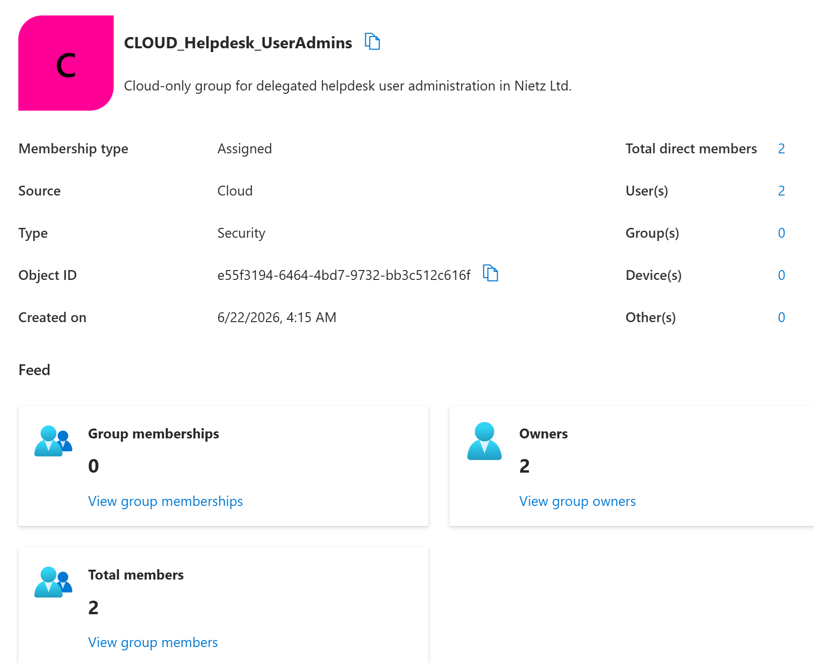
CLOUD_Helpdesk_UserAdmins created as a cloud security group with assigned membership and two direct users.2. Licence Administration Group Created
I created CLOUD_Helpdesk_LicenseAdmins as a separate assigned, cloud-only security group for delegated Microsoft 365 licence administration.
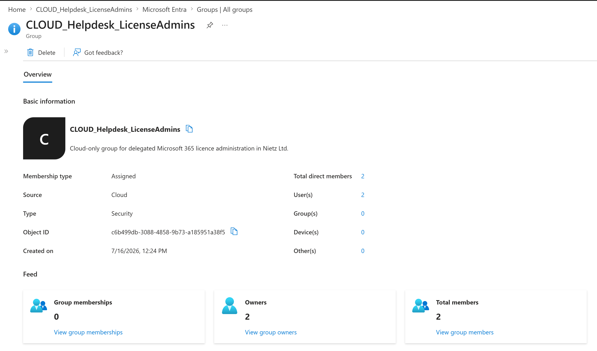
CLOUD_Helpdesk_LicenseAdmins created as a separate cloud security group for approved licence administration.3. Helpdesk Group Membership Confirmed
I added Chloe Bennett and Daniel Smith to the delegated helpdesk group so the Helpdesk Administrator role can be managed through group membership.
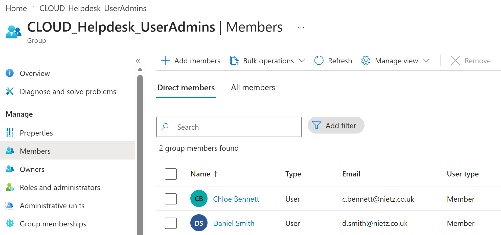
4. Licence Administration Group Membership Confirmed
I added Chloe Bennett and Daniel Smith to the delegated licence-administration group.
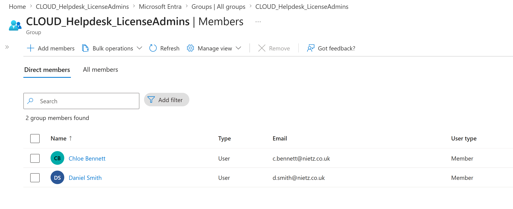
5. Helpdesk Administrator Role Assigned to Group
I assigned the built-in Helpdesk Administrator role to CLOUD_Helpdesk_UserAdmins at directory scope.
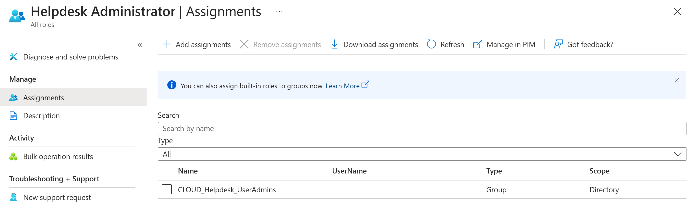
CLOUD_Helpdesk_UserAdmins assigned as a group at directory scope.6. License Administrator Role Assigned to Group
I assigned the built-in License Administrator role to CLOUD_Helpdesk_LicenseAdmins at directory scope.
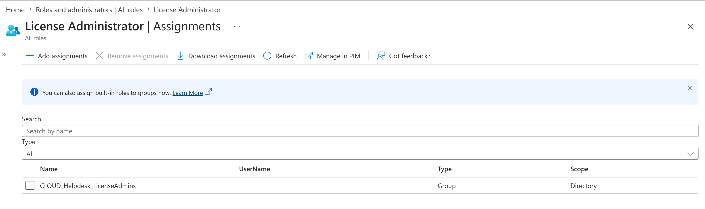
CLOUD_Helpdesk_LicenseAdmins assigned as a group at directory scope.7. Helpdesk Group-Side Role Confirmed
I checked the assigned roles view for CLOUD_Helpdesk_UserAdmins and confirmed that the group carries the built-in Helpdesk Administrator role.
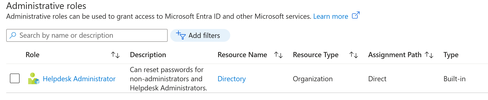
8. Licence Group-Side Role Confirmed
I checked the assigned roles view for CLOUD_Helpdesk_LicenseAdmins and confirmed that the group carries the built-in License Administrator role.
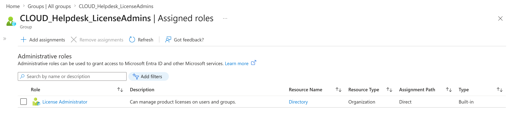
9. Delegated Password Reset Validated
I signed in as Chloe Bennett and confirmed that she could open the password-reset action for a standard user account.
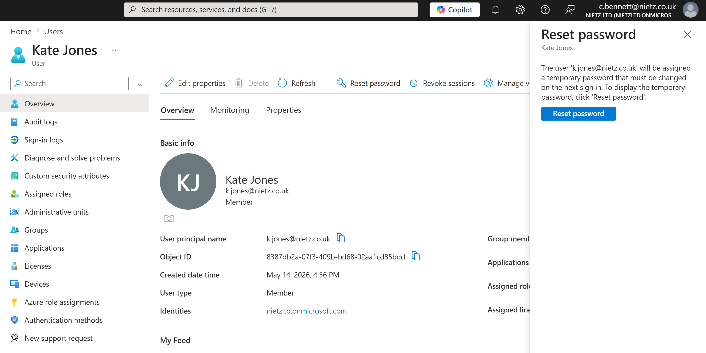
10. Delegated Licence Management Validated
I signed in as Chloe Bennett and confirmed that she could access editable licence controls for a standard user through the delegated License Administrator role.
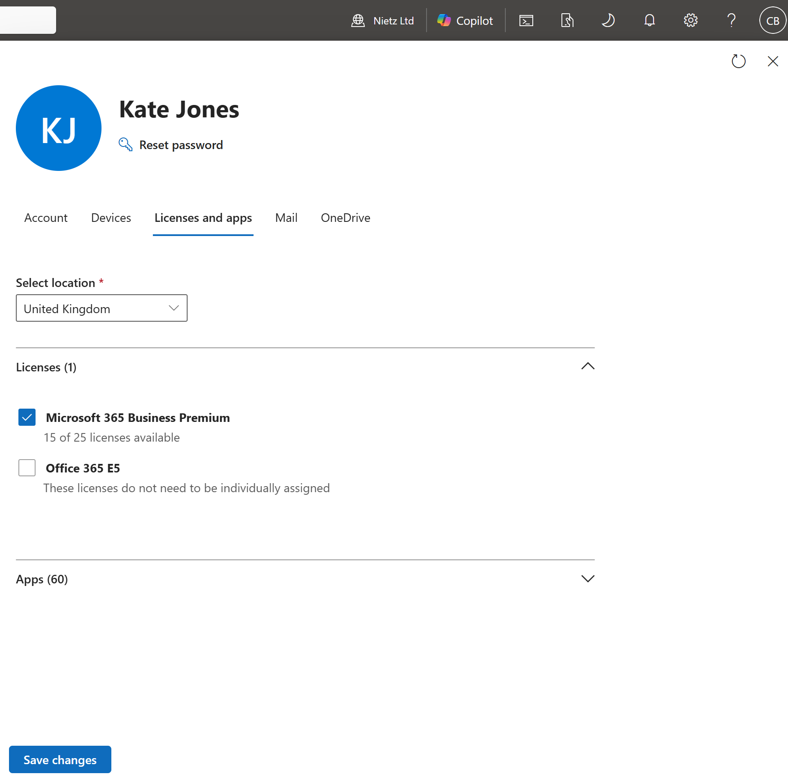
11. Privileged Password-Reset Boundary Confirmed
I tested the delegated boundary by opening the password-reset action against the daily administrator account. The reset was blocked because Chloe did not have sufficient privilege to reset that administrative account.
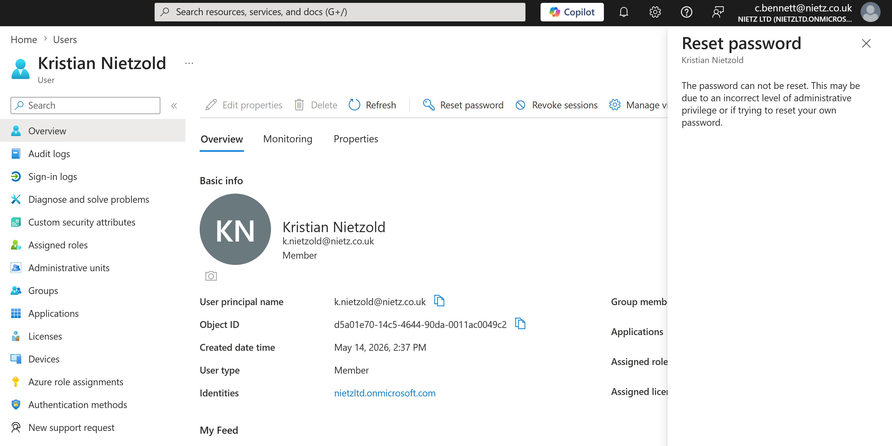
Validation
The helpdesk delegation was validated when CLOUD_Helpdesk_UserAdmins existed as an assigned cloud security group, Chloe Bennett and Daniel Smith were confirmed as direct members, and the built-in Helpdesk Administrator role was visible from both the role and group assignment views.
The licence delegation was validated when CLOUD_Helpdesk_LicenseAdmins existed as a separate assigned cloud security group, the same support users were confirmed as direct members, and the built-in License Administrator role was visible from both assignment views.
Operational access was validated by signing in as Chloe Bennett, confirming password-reset access for a standard user, confirming editable licence controls for a standard user, and verifying that the same delegated access did not allow reset of the daily administrator account.
Key Technical Outcomes
This lab demonstrated group-based Microsoft Entra role delegation through separate role-assignable cloud security groups for password support and Microsoft 365 licence administration.
It also demonstrated separation of duties by keeping licence permissions independent from helpdesk password-reset permissions and by validating the boundary protecting an administrative account.
Summary
- I created separate cloud security groups for delegated password support and licence administration.
- I added Chloe Bennett and Daniel Smith as direct members of both delegated role groups.
- I assigned the built-in
Helpdesk AdministratorandLicense Administratorroles through their respective groups. - I confirmed both role assignments from the role-side and group-side administrative views.
- I validated delegated password-reset and licence-management access as Chloe Bennett.
- I confirmed that Chloe's delegated access did not permit reset of the daily administrator account.